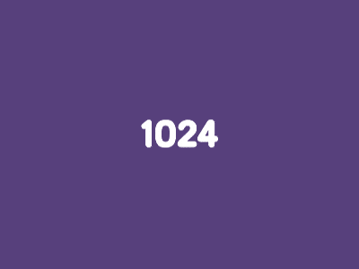
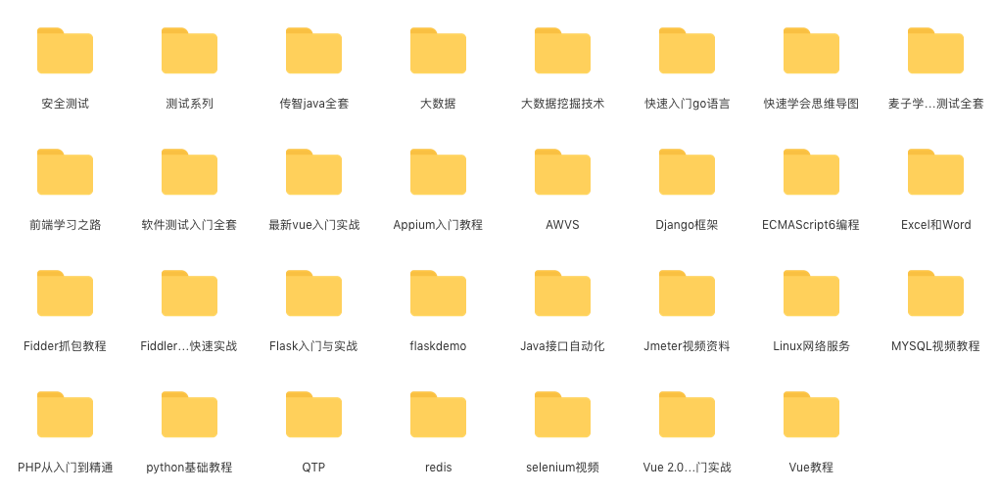
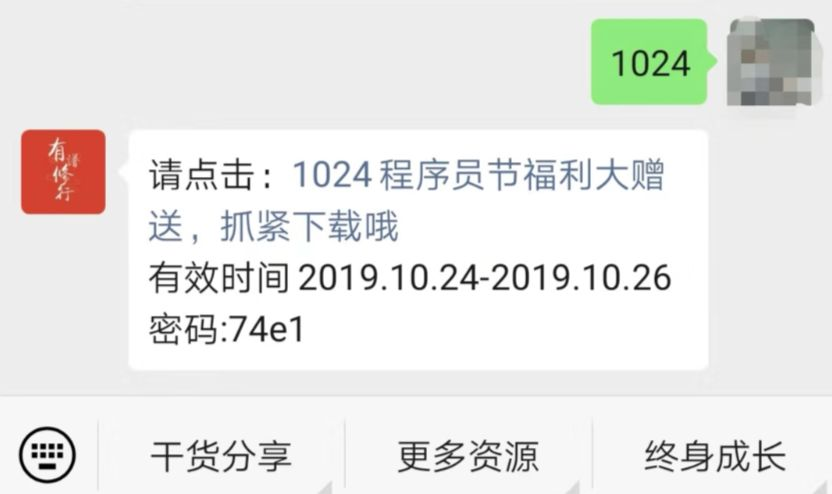

今天是10月24日，你造吗？
1024是程序员节
在这里 祝所有的程序员们节日快乐
1024 程序员节
忌：BUG 加班 掉发 寂寞
宜： 放假 聚餐 电影 撩妹
所以各位程序员们想好要如何庆祝今天这个节日了吗？不过在这一天有一个习俗
可能会有不少人，表示没有听过就是在节日当天，互相赠送橙子这是什么梗？还有这个习俗？
为什么要赠送橙子？这是有一定说法的中国人比较注重谐音橙子的“橙”与程序员的“程”同音于是橙子便成了最符合节日气氛的礼物
橙子本身色泽金黄金黄色在我国为吉祥之色象征富贵、财富、丰收等美好寓意这一天，送橙子给程序猿(媛)
祝福他们前程似锦，心想事成，全年无Bug
好了，其他话不说了趁着这个日子开启一波福利
时间：2019.10.24-2019.10.26
获取方式：公众号内回复 关键字 1024
即可获得以下所有视频教程


有图有真相，大家记得要抓紧哦
最后祝所有IT行业的从业者们
前程似锦、心想事成
研发和测试全年无bug
研发和产品再也没有爱恨纠葛
后期查看资料分享
记住这么找
进入公众号--更多资源--学习资源
快来 星标 置顶 关注 我